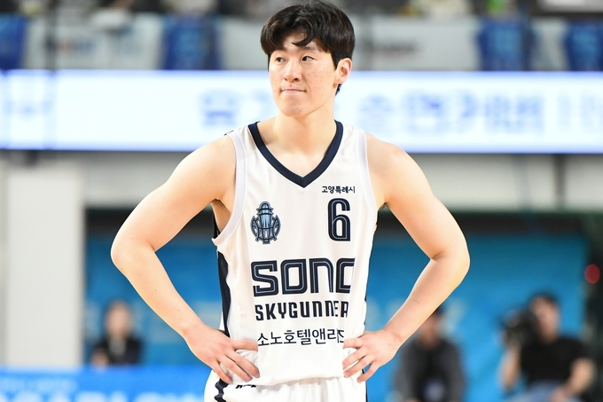
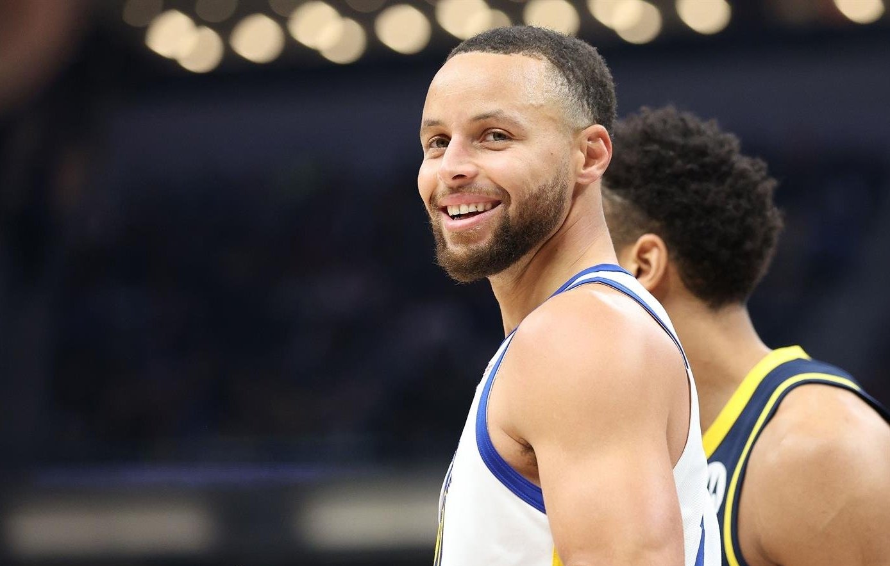

Who am I ?
자기소개
안녕하세요. 컴퓨터공학과 22학번 박태경입니다.
웹개발 동아리 멋쟁이사자처럼에서 프론트엔드를 맡고 있습니다.
언어
농구
농구 경기 보는 것이 거의 유일한 취미
방송으로 보는 것도 좋지만 직관을 더 좋아한다.
좋아하는 선수는 고양 소노 스카이거너스의 이정현
NBA 선수 중에서는 골든 스테이트 워리어스의 스테판 커리
노래 취향
밴드 음악
- 좋아하는 밴드는 유다빈밴드이다. 가장 좋아하는 노래는 "우리의 밤"이다.
케이팝
- 케이팝은 어렸을 때부터 꾸준히 좋아했다. 요즘 잘 듣고있는 케이팝 노래는 우즈의 "Drowning"이다.